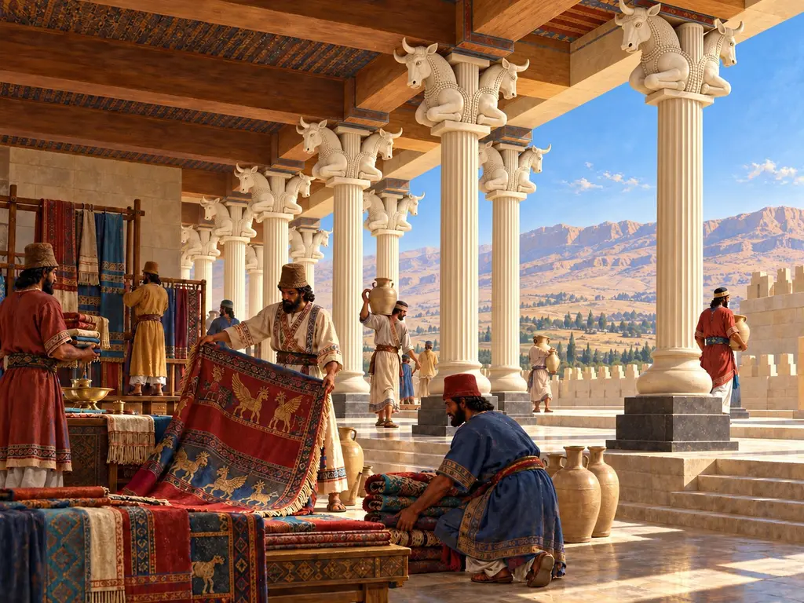
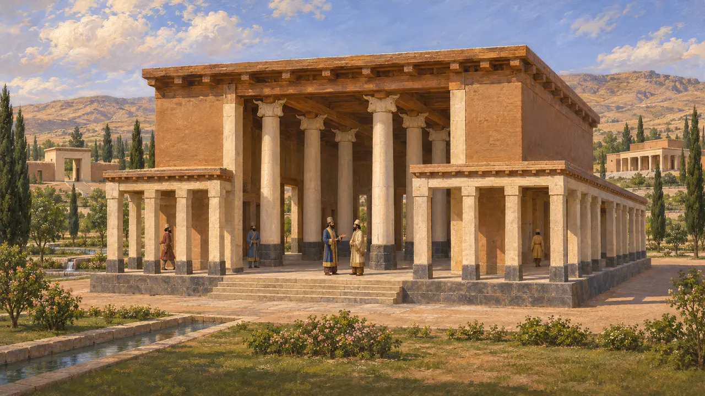
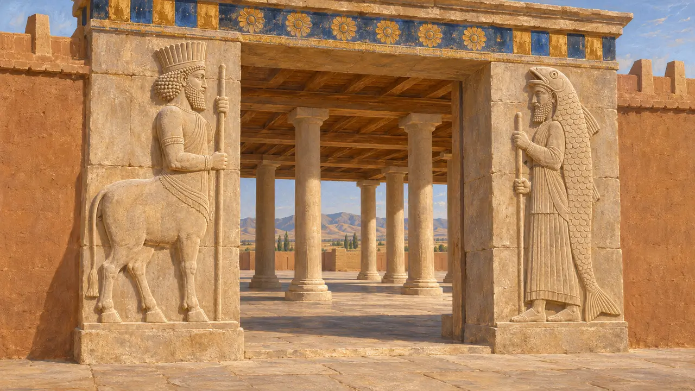
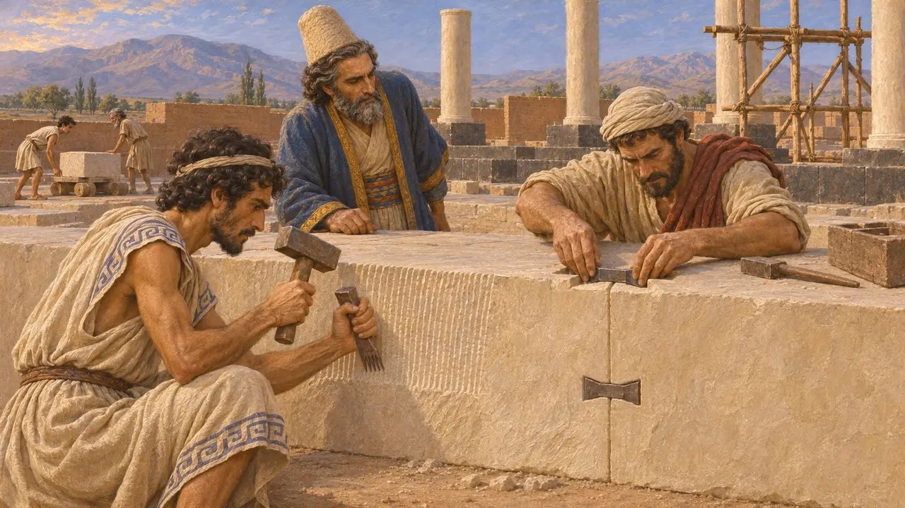
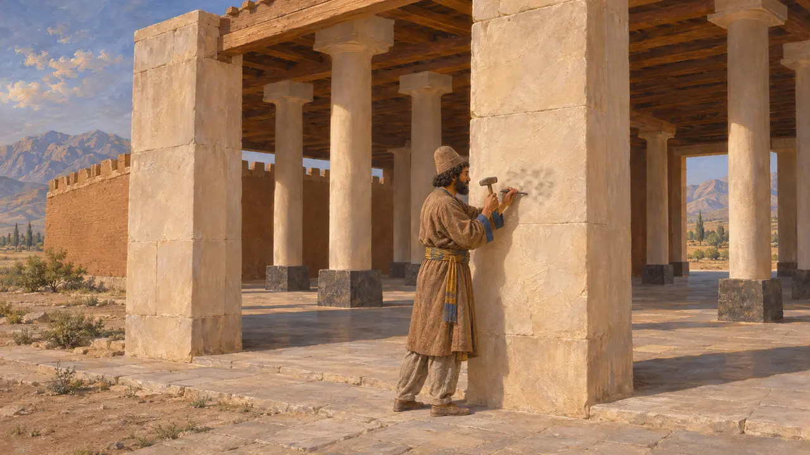
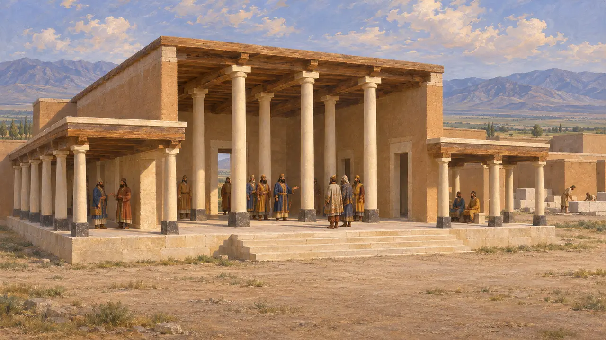

이른바 알현실, 곧 S 궁전은 키루스가 페르시스의 새 왕도 파사르가다에에 세운 석조 전각 가운데 하나였다. 높이 솟은 중앙 열주실의 사방을 주랑 현관이 둘러싼 이 건물은, 훗날 다리우스와 크세르크세스가 수사와 페르세폴리스에 지은 거대한 열주 전각의 본보기가 되었다.
게임에서: 파사르가다에 레벨에서 이 전각은 석회암 석재와 목재로 돌 하나하나 쌓아 올려집니다. 대체로 타당한 묘사지만, 실제 전각은 흰 돌과 검은 돌을 섞어 지었으며, '알현실'이라는 이름도 고대의 명칭이 아니라 현대에 붙인 것입니다.

정원 속의 열주 전각
당대 기록알리 사미와 이후 데이비드 스트로나크의 발굴로, 한때 목조 지붕을 받쳤던 높은 기둥이 네 개씩 두 줄로 늘어선 직사각형 중앙 홀이 드러났다. 네 면 모두에는 그보다 낮은 기둥을 세운 주랑이 둘러져 있었다. 기둥 몸체는 흰 석회암이었고 검은 돌로 된 주춧돌 위에 놓였으며, 남은 파편으로 보아 동물 머리 모양의 주두를 얹었던 것으로 보인다. 이 홀은 R문이라 불리는 성문루와 거처 궁전인 P궁전 가까이, 정원과 수로 사이에 서 있었다.
D. Stronach, Pasargadae, 1978

문가의 수호상
당대 기록출입구에는 부조가 새겨져 있었으나 지금은 아랫부분만 남아 있다. 그중에는 황소 인간과 물고기 가죽 망토를 두른 인물이 있는데, 둘 다 아시리아 궁전 미술에서 빌려 온 수호 존재이다. 이는 키루스의 건축가들이 새로운 페르시아 양식을 만들어 가면서 메소포타미아의 오랜 왕실 도상을 끌어다 썼음을 보여 준다.
M. C. Root, The King and Kingship in Achaemenid Art, 1979

서방 정복지에서 온 석공들
분쟁 중돌에 남은 정 자국, 특히 톱니 정의 자국과 석재를 잇는 데 쓴 제비꼬리 꺾쇠는 리디아와 이오니아에서 수련한 장인들을 가리킨다. 칼 닐란더는 키루스가 기원전 540년대에 사르디스를 점령한 뒤 서방의 석공들이 동쪽으로 왔다고 주장했다. 대부분의 역사가는 리디아와 이오니아 장인의 손길이 크게 닿았음을 인정하지만, 그런 일꾼이 얼마나 왔는지, 또 어떤 조건으로 왔는지는 여전히 논쟁 중이다.
C. Nylander, Ionians in Pasargadae, 1970


목적과 완공
분쟁 중S 궁전이 어떻게 쓰였는지 밝히는 고대 문헌은 없다. 탁 트인 구조로 보아 신민과 사절을 맞이하던 곳으로 짐작되어 알현실이라 불리지만, 이는 추론일 뿐이다. 스트로나크는 건축이 리디아 정복 이후인 기원전 540년대에 시작되었다고 보았다. 적어도 P 궁전은 키루스가 기원전 530년에 죽었을 때 미완성 상태였으며, 일부는 다리우스 치세에 완공되었을 수 있다.
D. Stronach, Pasargadae, 1978
출처
- D. Stronach, Pasargadae, 1978
- C. Nylander, Ionians in Pasargadae, 1970
- M. C. Root, The King and Kingship in Achaemenid Art, 1979
- CMa; DB §70
- A. Kuhrt, The Persian Empire, 2007
- P. Briant, From Cyrus to Alexander, 2002